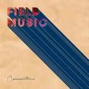
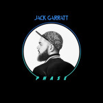
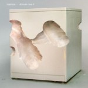
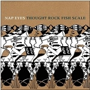

Quick Takes (February 2016)
If last month was teeming with a strong assortment of bouncy electro pop, then this one was chock-full of indie rock releases. Carl wasn't too impressed with most of these month's rock-oriented offerings, including Wolfmother's brazen return, while Juan was somewhat disappointed with those that lean toward an electronic persuasion. In the case of Matmos, maybe he just hates doing laundry. But ultimately, one record did manage to get our "Believe the Hype" stamp of approval. Below are some records that just couldn't be left ignored.
...
 El Guincho
El Guincho
Hiperasia
(Everlasting Records)
Pablo Díaz-Reixa, better known for his nom-de-plume of El Guincho, has been on a creative hibernation for over six years now after the one-two punch of Alegranza and Pop Negro, having stood out as a wholesome Spanish producer with spiritual ties to psych-pop manipulators like Panda Bear. But Díaz-Reixa’s globetrotting palette was as inventive, if not more inspired, releasing two widely disorienting records that gave the indie rock landscape a much-needed shot of diversity. Hiperasia presents a bracing return to form, and he remains just as idiosyncratic, stepping away from the lacerated Afro-pop of Alegranza to further explore a sorting of Latin sounds that range from dancehall to urban rhythm and blues. Díaz-Reixa seems overly-adamant to alienate himself from his past work, though, as the clipped synthetic textures and chopped, bewildering samples are staged as if he’s about to pull disappearing act. Hiperasia is an incoherent mess, sure, but a fun one, too, splattering all kinds of disparate, colorful sounds in the hopes that some of it will stick. [6/10] Juan Edgardo Rodríguez
 Essaie Pas
Essaie Pas
Demain est une autre neut
(DFA Records)
Equally cinematic and vivid, Essaie Pas’ dark and seductive Demain est une autre nuit is drenched in atmosphere. The Montreal-based couple of Marie Davidson and Pierre Guerineau come together after a series of solo projects, congealing an icy, synthetic sound that’s dutifully inspired by coldwave and the retro-futurism of Cliff Martinez’s scores. Considering how isolated and motorized Davidson and Guerineau can come across, as if trying to evoke a defiant bearing that can sometimes border on bored, the album’s wooden, even emotionless performers do ostensibly emphasize the tinny beats and hard-edged industrial appearance with a relentless slab of danceable gloom. In their dramatic interplay they find their lust for perversion and compulsion, as if exploring the infinite degrees of their relationship with the same piquant allure of Gainsbourg and Birkin (albeit less warm and more interpersonally brittle). [7/10] Juan Edgardo Rodríguez
Field Music
Commontime
(Memphis Industries)
Sometime during their ten-year run, Field Music miraculously found a way to make the eternally uncool eighties sound relevant. It may be due to the fact that the Brewis brothers really have a passion for pop music’s checkered evolution during this time, seeing as the blue-eyed funk of Disappointed and the Philly soul-inspired bounce of Don’t You Want to Know What’s Wrong? are examples of how they firmly believe that, say, a Hall and Oates jam and a Jam and Lewis production aren’t as incompatible as one might think. This shouldn’t be a regular concern for the regular Field Music aficionado: they’ve been hinting at this direction as far as Tones of Town, not to mention that the signature complex meters they typically employ are still scattered in all directions, always a joy to behold. But at some point during their workmanlike tenure they had to temper those skittish arrangements to actually give more straight-ahead pop compositions a shot, right? Seriously, wouldn’t it be great if they could payola their way into a billboard hit with the tuneful brilliance of It’s a Good Thing? Maybe not, and as more challenging and artful pieces like The Morning is Waiting prove, the Brewises’ love for intricate harmonies will always go hand in hand with slick pop hooks. Instead of a fleeting hit, their unremitting search for cult immortality (and on their own terms) continues. 8/10 [Believe the Hype] Juan Edgardo Rodríguez
Jack Garratt
Phase
(Interscope)
The latest name in the procession of UK artists who are championed by the BBC - and hyped so much that their debut album is always going to be a monumental chart success - is Jack Garratt. He’s already picked up that many awards before his first LP was even released that it’s surprising he didn’t pip Leo to his Oscar. Musically, Phase shows Garratt off as a vastly talented multi-instrumentalist with a fondness for throbbing subwoofers and an astuteness with a loop pedal. His flaws are, in all fairness, no fault of his own, either. The problem is that his soulful voice and fondness for stark beats aren’t utilised to their fullest extents. Instead, they are polished into something that must have ease of access. He showcases hints of intimacies that would be better suited to a smaller catchment, but thanks to the hyperbolic hype that has charted his fledgling period in the music industry, it is simply never going to happen. The potential is there for this to be very good, but the fact that it’s so comprehensively safeguarded limits it hugely. [5/10] Carl Purvis
Matmos
Ultimate Care II
(Thrill Jockey)
More impressive in execution rather than in design, Ultimate Care II answers the burning question anyone ever wondered or bothered to ask: what kind of result would you get out of assembling a series of sounds generated by a Whirlpool washing machine? As mundane as a trip to your nearest coin laundry, Ultimate Care II is more so a play on genre experimentation rather then an exercise in writing a deeply affecting composition. Granted, the amount of care that went into cobbling a disorienting sound collage of whirring and whizzing sounds is undeniable. It’s impossible to separate the source material at hand; this right on Matmos’ wheelhouse. The problem with Ultimate Care II is that it simply drags for too long, making what could’ve been a fascinating EP into a dragged-out, joyless chore. Ultimate Care II doesn’t inspire one to peer closer into the musicality of everyday life; instead, you’ll constantly look at the time, wishing it’d sped up so you can move on with anything else. [5/10] Juan Edgardo Rodríguez
Nap Eyes
Thought Rock Fish Scale
(Paradise of Bachelors)
Nigel Chapman performs with such an effortless composure that he makes it sound easy. As the main songwriter of Halifax’s Nap Eyes, Chapman is an introverted wordsmith who’s proudly taken on Loud Reed’s mantle with a set of uncomplicated-sounding songs that take their dear time to unfurl. From the slow-as-molasses fluctuating scales of Lions in Chains to the sustained minimal progression of Click Clack, his songs rarely rip and usually take a more performative approach to add some extra-bold emphasis to his sing-speak ruminations. Chapman never obscures his words, as they’re always front and center and ripe for some further examining, putting forth a refreshingly vulnerable songwriter whose arid, though endlessly sagacious observations could exist in your parents’ favorite classic rock AM station. Trust ends with Chapman pleading his object of affection to have some faith in him, though it could also be a message to his listeners: setting aside his lackadaisical manner, Chapman really does want you to care about what he thinks. [7/10] Juan Edgardo Rodríguez
 Quilt
Quilt
Plaza
(Mexican Summer)
Plaza is Quilt’s third LP, and is their most stylish album to date. Strangely, the Boston four-piece compiled the track list for the record largely from old demos, which is an odd move for a band that is still relatively fledgling in their career. A list of obvious potential roadblocks would no doubt have been mooted, most of them centring on whether a handful of songs written over a rangy period of time could be arranged into something fluid and cohesive, but Quilt have managed that with consummate ease. Plaza is indie rock with a pop sensibility and a slick edge, with guitars rippling through the tight conduits of Anna Fox Rochinski and Shane Butler’s songwriting machine. Songs distort from their structures, allowing for a gelatinous cortege that serves to distinguish the album with flair and maintain a fetching edginess throughout. [7/10] Carl Purvis
 Telegram
Telegram
Operator
(Republic of Music)
Telegram’s debut LP comes three years after their debut single Follow brought them a great deal of hype in the UK. As a result, the hype train didn’t so much as derail, but simply drove off the map. This is by no means a bad thing, either. Operator is released on the band’s own label, and is dropped into an environment where it can build its own momentum without hype dictating its reception. The production is excellent, with a live, retro sound governing their mesh of glam and proto-punk. Tracks are belted out with a bold energy and don’t overstay their welcome, and Matt Saunders’ agitated Welsh vocal is crucial to the clenched intensity of his tenacious songs. Operator is a very good debut, impressively original without becoming too inaccessible, and the debut single that dropped three years ago sounds as fresh and as authentic as it ever did. [7/10] Carl Purvis
 Tortoise
Tortoise
The Catastrophist
(Thrill Jockey)
Tortoise is one of the most important post-rock bands of the last twenty years, but never seem to receive open praise outside of critical circles. Their sonic palette is at once muted and striking — an almost cinematic odyssey for the listener, taking on a fill-in-the-blank narrative. But the problem with The Catastrophist is that there is a certain malaise that overtakes the brain as you get further into it. The strong immediacy of some of their most daring and arresting work, now seven years behind them, must have taken a long walk off a short dock in the interim. That’s not to say that the musical watercolors they are working with are absent; tracks like Ox Duke and Gesceap are both a pleasant textural mélange of jazz and Reich-like minimalism. But the forays into seventies classic rock and funk are at a taking-your-mom-out-to-the-prom level of embarrassment: Rock On's weak vocals never become worthy of comparison to David Essex soulful original performance, and the Philly-soul guitar of Hot Coffee sounds disarmingly out-of-place with the rest of the song. The Catastrophist is an odd record — an album that was probably more interesting to perform than to listen to. [6/10] Joseph Moore
Wolfmother
Victorious
(UMe)
In some parts, Victorious isn’t far from being a return to form for Wolfmother, which is now nothing more than a moniker for Andrew Stockdale’s solo work. He’s definitely at his best when his voice is evoking the frenzied ebullience of Ozzy Osbourne, and his proto-metal riffs are galloping furiously and wearing fuzz with panache. Opening track The Love That You Give ticks those boxes, unashamedly thrusting the obvious influences of Led Zeppelin, Black Sabbath and MC5, amongst others, to the forefront. If you’re listening to Wolfmother, that’s probably what you’re going to be after at that particular point, so such brazenness is by no means a bad thing in that sense. When Stockdale steps out of the box-checked zone, embarking upon awful rock ballads and hideous power-pop songs, his work starts to falter spectacularly. Victorious is premium Wolfmother in places, and pretty much abominable in others. [5/10] Carl Purvis
 Yuck
Yuck
Stranger Things
(Balaclava Records)
Unless Yuck’s reshuffled lineup can forge an identity for themselves in future releases, anything they record is going to be plagued by the shadow of their former frontman’s contribution to their excellent debut. Daniel Blumberg quit the group before their second LP (2013’s Glow & Behold). On that record, the scuzzy rawness that made their debut so impressive had vanished, and was replaced by a bland, toothless piece of work. With Stranger Things, what’s holding Yuck back isn’t comparisons to other bands (which is typical of every other 90s indebted, slacker rock band), but comparisons to themselves. The new lineup has clearly made more of a conscious effort to rekindle the misfit energy of their debut, recording the album themselves and fuzzing guitars to their limit. The result is a passable third LP, but it’s a cheap copy of the original. Frontman Max Bloom’s voice isn’t even that dissimilar from that of the man he replaced in 2013, but he’s lacking something that Blumberg clearly had in his arsenal to sharpen his band’s sound. [5/10] Carl Purvis
7 March, 2016 - 21:53 — No Ripcord Staff